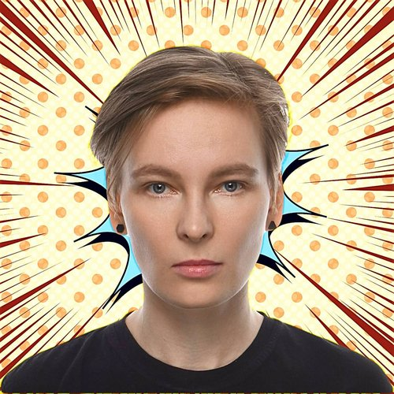

Будем знакомы!
Привет! Меня зовут Кристина, мне 36 лет, и я родом из Санкт-Петербурга.
⚒️ Чем я могу вам помочь
Вы смело можете ко мне обратиться, если вам нужно:
- Поработать над текстами интерфейса сайта или приложения
- Сверстать сайт по макету
- Перевести и отредактировать техническую статью
- Написать статью на Хабр, VC или Т—Ж
- Настроить работу продуктовой редакции
🚧 Где и кем работала
- написание статей для IT-ресурсов
- написание UX-текстов
- редактирование книг
- HTML-верстка по макетам из Figma
- написание инструкций и документации, работа в Confluence
- написание UX-текстов
- работа над структурой будущих фичей с PM
- создание маркетинговых текстов
- перевод с английского на русский и наоборот
- координация редакции
- поиск сотрудников в отдел
- разработка редполитики и ToV компании
- написание инструкций и документации, работа в Confluence
- написание UX-текстов
- поиск сторонних авторов и контроль их работы
- ведение книжных проектов
- редактирование переводов книг
- общение с авторами
- проверка работы редакторов и переводчиков
- подбор исполнителей на проекты
- контроль качества макета книги
- редакторская правка переводов (стандарты ASTM, ISO, ASME, API, SAE)
- корректорская правка
- проверка соответствия оригинального текста с переводом
🎓 Где и чему училась
Еще в школе увлеклась версткой, когда в блокноте прописывала код сайта и потом загружала все на бесплатный хостинг narod. ru. Олдфаги здесь?
По образованию издательский работник. Окончила СЗИП.
Училась на Python-разработчика на курсах профессиональной переподготовки в питерском Политехе.
Изучала современную верстку на курсах Йонаса Шмедтманна на Udemy, курсах «ВебКадеми» и других ресурсах. Хожу на митапы по UX.
Сейчас изучаю фронтенд-разработку.
🧩 Немного не о работе
Много читаю, люблю нон-фикшн, занимаюсь самообразованием и дочь маминой подруги люблю узнавать
новое.

“Хороший текст — лучше, чем плохой текст! Ауф! ☝️„